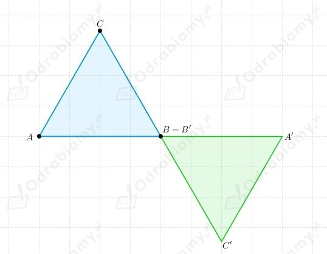
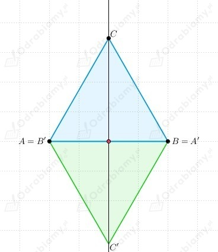
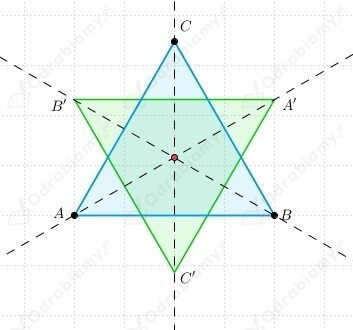
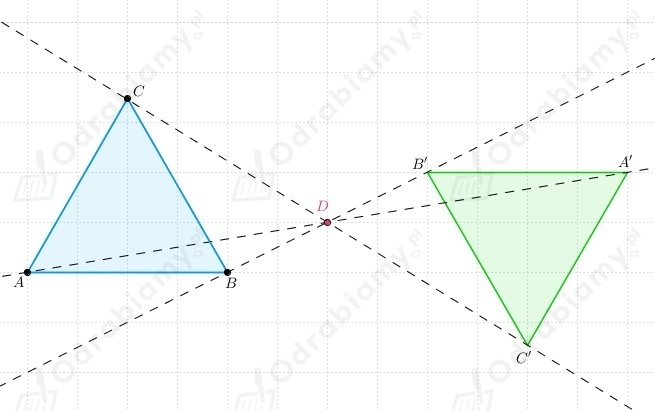

Trójkąta ABC, to trójkąt równoboczny.
a)
Odbicie symetryczne trójkąta ABC względem jednego z jego wierzchołków (względem wierzchołka B).

b)
Odbicie symetryczne trójkąta ABC względem środka jednego z jego boków (środka boku AB).

c)
Odbicie symetryczne trójkąta ABC względem punktu przecięcia jego dwusiecznych.

d)
Odbicie symetryczne trójkąta ABC względem punktu leżącego na zewnątrz niego (względem punktu D).

|
Przypomnijmy, że figurę nazywamy środkowosymetryczną, jeśli istnieje taki punkt O, że figura ta jest swoim własnym obrazem w symetrii względem tego punktu. Punkt O nazywamy wówczas środkiem symetrii tej figury. |
Równoległobok ma środek symetrii (punkt przecięcia przekątnych).
Prosta ma środek symetrii.
Kwadrat ma środek symetrii.
Odcinek ma środek symetrii (punkt będący środkiem odcinka).